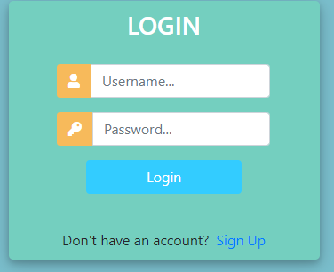

Login Verification System
I used the Django framework to create a very simple work in progress login system. The pages to this website(a simple database) are locked until you create an account and login.

I learned how to set up Django's very helpful views and url pages. Run the server in cmd using manage.py. Django's built in functionality makes it a very good framework for quick databases and query sets.